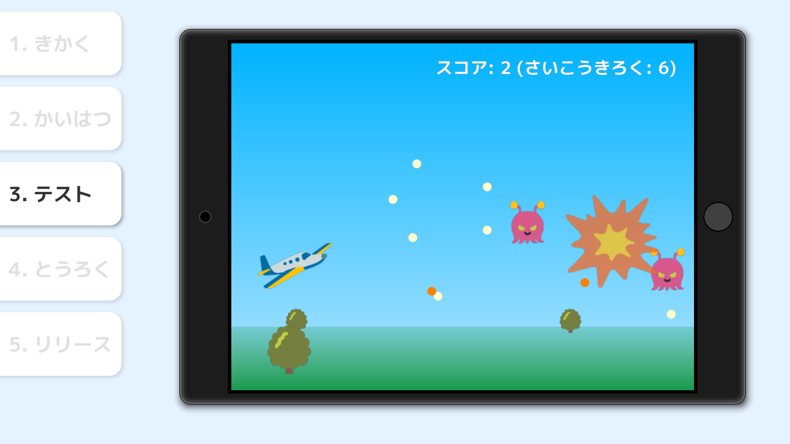
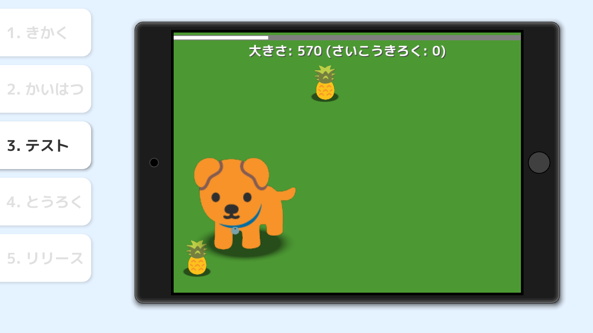
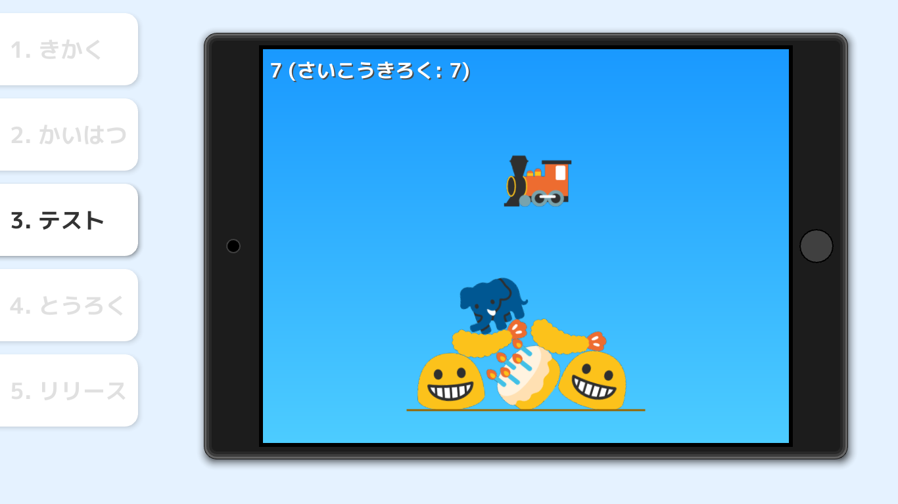

Siv3D for Kids
Siv3D for Kids (シブスリーディー・フォー・キッズ) は、ゲームやアプリのプログラムの改造を通して、コンピュータープログラミングの体験ができるツールです（対象年齢 5 歳以上）。
情報機器を受動的に使う子どもたちが、コンピューターを使って自分の力でゲームやアプリを作れるということを発見し、プログラミングの世界への第一歩を踏み出すきっかけを作ります。
ダウンロード
https://siv3d.booth.pm/items/1476917
本製品の動作条件などをよくご確認ください。
無料体験版
- 2 種類のゲームが遊べます
- 有料版の購入前の動作確認にご利用ください
Pro 版
- 6 種類のゲームが遊べます（無料アップデートで最大 12 種類のゲーム・アプリに）
- 2020 年夏まで、継続的に無料のアップデート（機能の強化と追加コンテンツ）が提供されます
- 1 回購入すれば半永久的に再ダウンロード可能です
アップデート履歴
- 2019-07-27: 最初のバージョン (6 種類のゲーム)
今後のアップデート予定
- 追加のゲーム・アプリ
- macOS 対応
- カスタマイズできる項目の追加
- チュートリアルの導入
- 保護者向けガイド
- 先生向けの機能
作れるゲームの例




謝辞
Siv3D for Kids は 公益財団法人 I-O DATA 財団 の助成を受けました。